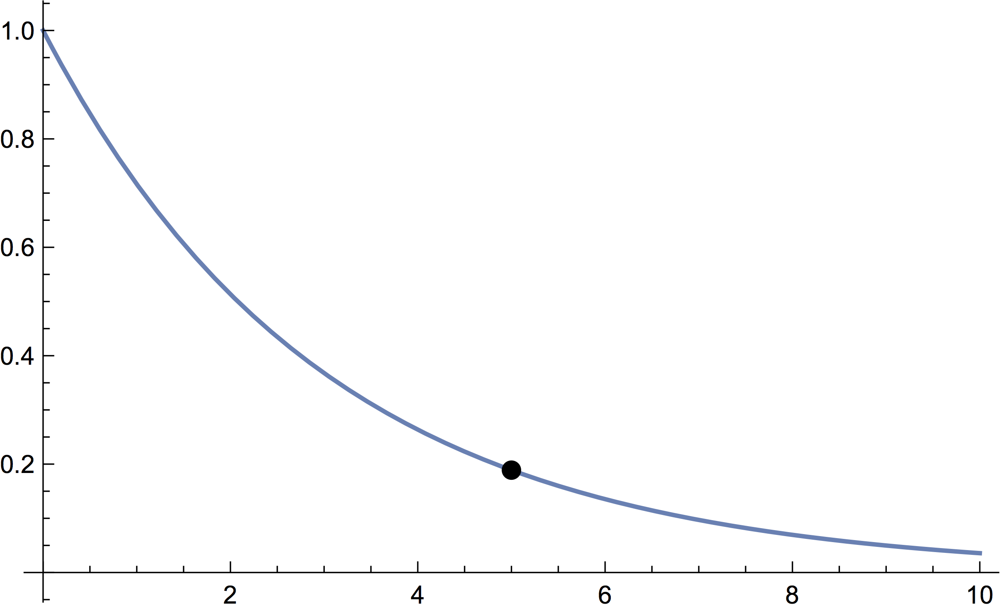
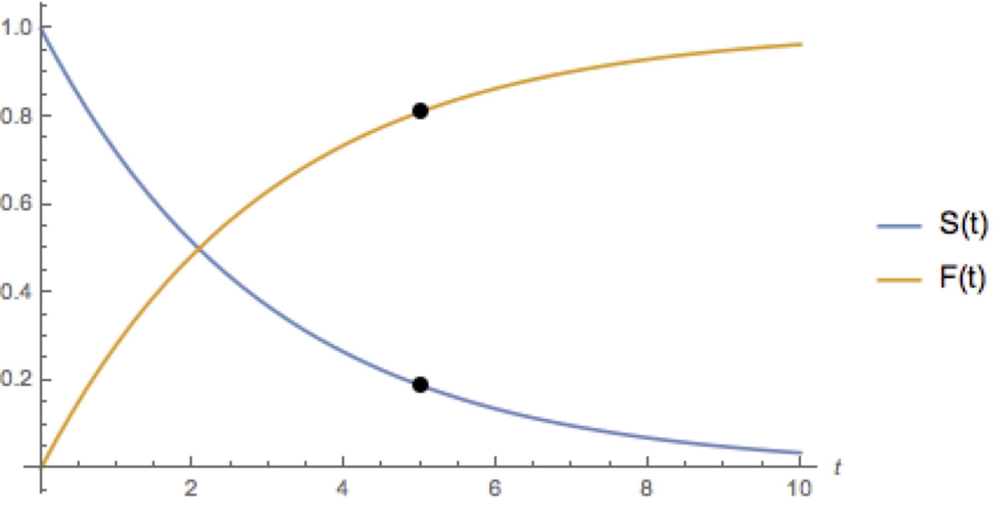

Every item, system, person, or animal has a lifetime. For people and animals, we typically just measure the lifetime in years, but we have other options for items and systems. We can measure airplane reliability in flight hours (hours actually flown), or stress test a manufacturing tool in cycles. Regardless of the units we use, there are many things in common. We don’t know how long any item will “live” before it’s manufactured or deployed, so an item’s lifetime is a random variable. We wish to make decisions about manufacturing, warranties, or even purchasing by taking the reliability of an object into account.
We can represent each class of items (a brand of 100W lightbulbs, USR’s NS4 robots, etc) by a random variable for the lifetime. We’ll call it $Y$. Like any random variable, it has a probability distribution. There isn’t only one way to represent the distribution of $Y$. We can look at equivalent representations, each one useful for answering different types of questions. This article will run through a few of them and the uses by studying the theoretical lifetime distribution of USR’s famous NS4 robots.
The survivor function is the most common way to study the lifetime of an item. Colloquially, this is the probability that the item survives past time $t$. We denote it by $S(t)$, and we can write mathematically that \[S(t) = P(Y \geq t)\] This equation can be given by a standard probability distribution (the exponential distribution is the most common, though not the most realistic) or other formula. <\p>
Without having access to USR’s manufacturing data, let’s assume that the survivor function of the NS4 robot is given by $S(t) = e^{-t/3}$. Let’s also assume that $t$ is measured in years. What is the probability that a brand new NS4 lasts more than 5 years?
From the graph above, we can simply plug $t=5$ into the survivor function to get the answer to our question. The probability that the new NS4 survives longer than 5 years is
\[S(5) = e^{-5/3} \approx 0.189\] or about an 18.9% chance.We could use the survivor function to help NSR decide where to place the cutoff for warranty claims. Depending on the cost of either repairing the NS4 or replacing the NS4 with the NS5, we can backsolve to find out what $t$ would satisfy management. Suppose the cost function requires that the probability of surviving past the cutoff $t$ is 85%. Then we can use the survivor function to backsolve for $t$: \[\begin{align*} 0.85 &= e^{-t/3} \\ \ln(0.85) &= -\frac{t}{3} \\ 0.49 &\approx t \end{align*}\] Thus, we would set the warranty claims to be valid only for about the first half year after the NS4 is purchased.
Remark. Another way to judge an item is by looking at the shape of the survivor function. A steep decline like the one shown in the above graph tells us that the NS4 isn’t exactly the most reliable robot. Only about half of them survive two years.
For those who wish to dive into a little bit more math, we can dive into the conditional survivor function. This “spinoff” of the survivor function will tell us the probability of surviving past time $t$ when it is currently functioning at time aa. The survivor function above assumes $t$ starts at 0; that is, the object is brand new. If we have bought a used NS4, or perhaps have been sending it to the grocery store for a while, then we need to take into account the fact that the NS4 has been operational for some time $a$.
We write the conditional survivor function $S_{Y|Y\geq a}(t)$ for some fixed $a$. We can use the famous Bayes formula to express this mathematically: \[S_{Y|Y\geq a}(t) = P(Y \geq t | Y \geq a) = \frac{P(Y \geq t \wedge Y \geq a)}{P(Y \geq a)} = \frac{P(Y \geq t)}{P(Y \geq a)} = \frac{S(t)}{S(a)}\]
What this formula is basically saying is that the probability that the NS4 survives past $t$ given that it has already lived for aa years is given by $\frac{S(t)}{S(a)}$, and derived via Bayes’ formula.
Suppose we bought a used NS4 that was 2 years old (and it is working now). What is the probability that this NS4 is still working more than 3 years from now?
We are looking for the probability that the NS4 is still operational after more than 5 years given that it has already been working for 2. So \[S_{Y|Y\geq 2}(5) = \frac{S(5)}{S(2)} = \frac{e^{-5/3}}{e^{-2/3}} = \frac{1}{e} \approx 0.367\] Thus, we only have a 36.7% chance of getting more than 3 years out of our used NS4. Perhaps we may want to consider haggling for a lower price ...
This is the cumulative distribution function straight from basic probability, but we can add an additional interpretation in the context of reliability. Mathematically, the cumulative distribution function for a random variable $Y$ is the probability that the random variable is less than or equal to a fixed value $y$. Mathematically, we denote this by $F_{Y}(t) = P(Y \leq t)$.
You may recognize this as the “opposite” of the survival function ($S_{Y}(t) = P(Y \geq t)$. In probability, we call this the complement, and we can get from one event to its complement by noting that for an event $A$ and its complement $A^{c}$, $P(A) + P(A^{c}) = 1$. Thus, moving back to the survivor function and CDF, $S_{Y}(t) + F_{Y}(t) = 1$. Therefore, $F_{Y}(t) = 1-S_{Y}(t)$. With the NS4 example, the CDF is given by \[F_{Y}(t) = 1-e^{-t/3}\] The interpretation is exactly the opposite of the survivor function. The CDF gives us the probability that the NS4 will fail before time $t$. 
The hazard function is commonly used in engineering maintenance to determine schedules for checks or component replacement. For example, the hazard function can be used to determine how many flight hours a fighter jet can be operated before a certain component is at risk for failure and should be inspected for replacement.
There are other forms we can use to express the distribution of an object’s lifetime, but these are the most common. Another thing to note is that we can easily move from one form to another. They all represent the same thing–lifetime of a system, but in slightly different ways. We were able to make several different decisions about USR’s NS4 robots thanks to these different representations.